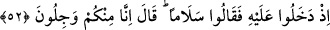
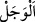
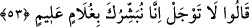
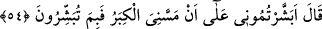

52. Onun yanına girdikleri zaman, “selâm” dediler. (İbrâhim:) “Biz sizden
çekiniyoruz.” dedi.
Hani “onun yanına girdikleri zaman,” girerken de ‘selâm!’ dediler. İbrâhim (a.s.) da:
‘Selâm!’ dedi ve hemen kızartılmış bir buzağı getirdi. Fakat ellerinin yemeye
gitmediğini görünce onları yadırgadı ve içine bir korku düştü. İbrâhim (a.s.): “Biz
sizden çekiniyoruz.” korkuyoruz “dedi.”
“
el-Vecel”, hoşa gitmeyecek bir şeyle karşılaşma ihtimâli yüzünden kişinin
rahatsız olması hâlidir. Misâfirler önlerine koyup yaklaştırdığı kızarmış buzağı etini
yemekten imtinâ’ ettikleri için İbrâhim (a.s.) böyle demiştir. Çünkü, onların âdetine göre
bir misâfir ev sâhibinin yemeğini yemediği zaman hayırlı bir iş için gelmediği zannına
kapılırlardı.
53. Dediler ki: Korkma; biz sana ilim sâhibi bir oğul müjdeliyoruz.
Melekler, “dediler ki:” Ey İbrâhim! “Korkma; biz sana,” bülûğa erdiğinde “ilim
sâhibi” olacak, yâni kendisine peygamberlik ilmi ulaşacak İshâk adında “bir oğul
müjdeliyoruz.”
“Biz sana...” ifâdesi, “korkma” demelerinin illetini gösteren bir başlangıç
cümlesidir. Çünkü müjdeledikleri şey insanda ne korku ne de üzüntü bırakır. Nasıl
kalsın ki, onlar onun ve âilesinin uzun süre sıhhat ve âfiyet içerisinde kalacağını
müjdelemektedir.
Müjde, kişinin sevinmesini sağlayacak bir şeyi haber vermektir.
54. (İbrâhim:) “Bana ihtiyarlık çökmesine rağmen beni müjdeliyor musunuz? Ne
tuhaf bir şey ile müjdeliyorsunuz?” dedi.
“(İbrâhim): “Bana ihtiyarlık çökmesine” ve beni etkilemiş olmasına “rağmen beni
müjdeliyor musunuz?” Buradaki soru, şaşkınlık ve normal şartlarda ihtimâl dışı görme
mânâsı ifâde eden bir sorudur. Âyetteki “alâ” harfi, “mea” anlamındadır. Buna göre
mânâ, “İhtiyarlık gelip çatmış olmasına rağmen çocuğum olacak diye mi